<title>방식 1 다듬기</title>
<link rel="preconnect" href="https://fonts.googleapis.com">
<link rel="preconnect" href="https://fonts.gstatic.com" crossorigin>
<link rel="stylesheet" href="https://fonts.googleapis.com/css2?family=IBM+Plex+Mono:wght@400;500&family=IBM+Plex+Sans+KR:wght@400;500;600;700&display=swap">
<style>
:root{--bg:#F5F6F8;--paper:#fff;--ink:#1B1F27;--muted:#5B6473;--line:#DDE1E8;--soft:#EEF1F6;--accent:#2F5BD3;--good:#1E8A52;--bad:#C83A32;--warn:#B26A00;
--f-body:"IBM Plex Sans KR","Malgun Gothic",system-ui,sans-serif;--f-mono:"IBM Plex Mono",ui-monospace,Consolas,monospace}
@media (prefers-color-scheme: dark){:root:not([data-theme="light"]){--bg:#12151B;--paper:#191D25;--ink:#E5E8EE;--muted:#9BA4B3;--line:#2B313C;--soft:#20252F;--accent:#7FA2FF;--good:#5ACB8C;--bad:#FF6F66;--warn:#F0AE48;color-scheme:dark}}
:root[data-theme="dark"]{--bg:#12151B;--paper:#191D25;--ink:#E5E8EE;--muted:#9BA4B3;--line:#2B313C;--soft:#20252F;--accent:#7FA2FF;--good:#5ACB8C;--bad:#FF6F66;--warn:#F0AE48;color-scheme:dark}
*{box-sizing:border-box}
body{background:var(--bg);color:var(--ink);font-family:var(--f-body);font-size:16px;line-height:1.7;margin:0}
main{max-width:940px;margin:0 auto;padding-inline:16px;padding-block:26px 60px}
h1{font-size:clamp(25px,4vw,33px);margin:0;line-height:1.25;text-wrap:balance}
.sub{color:var(--muted);margin:6px 0 0}
h2{font-size:21px;margin:40px 0 6px;text-wrap:balance}
h3{font-size:17px;margin:22px 0 4px}
p,ul,ol{max-width:74ch} li{margin:3px 0}
figure{margin:16px 0;background:var(--paper);border:1px solid var(--line);border-radius:12px;padding:12px}
figure img{display:block;width:100%;max-width:100%;height:auto;border-radius:6px;background:var(--soft)}
figure svg{display:block;width:100%;height:auto}
figcaption{font-size:14px;color:var(--muted);margin-top:8px}
figcaption b{color:var(--ink)}
.tbl{overflow-x:auto;margin:12px 0}
table{border-collapse:collapse;font-size:14.5px;min-width:540px;width:100%;background:var(--paper)}
th,td{border:1px solid var(--line);padding:6px 10px;text-align:left;vertical-align:top}
th{background:var(--soft)}
td.num{font-family:var(--f-mono);font-variant-numeric:tabular-nums;white-space:nowrap}
.good{color:var(--good);font-weight:600}.bad{color:var(--bad);font-weight:600}.warn{color:var(--warn);font-weight:600}
.box{background:var(--paper);border:1px solid var(--line);border-left:4px solid var(--accent);border-radius:0 10px 10px 0;padding:12px 16px;margin:14px 0}
code{font-family:var(--f-mono);font-size:13.5px;background:var(--soft);padding:1px 5px;border-radius:4px;overflow-wrap:anywhere}
.chip{display:inline-block;font-size:12.5px;font-weight:600;padding:1px 8px;border-radius:999px;border:1px solid var(--line);background:var(--soft);white-space:nowrap}
.chip.ok{color:var(--good)}.chip.part{color:var(--warn)}.chip.no{color:var(--bad)}
.svgwrap{overflow-x:auto} .svgwrap svg{min-width:680px}
svg text{font-family:var(--f-body)}
.s-ink{fill:var(--ink)}.s-muted{fill:var(--muted)}.s-paper{fill:var(--paper)}.s-soft{fill:var(--soft)}.s-acc{fill:var(--accent)}.s-good{fill:var(--good)}
.st-line{stroke:var(--line)}.st-acc{stroke:var(--accent)}.st-muted{stroke:var(--muted)}
</style>
<main>
<h1>방식 1 다듬기: 메시 · 리깅 포인트 · 본 · 표정</h1>
<p class="sub">2026-10-13 · 실사 f02 · 반실사 f06 · 카툰 f11 · 애니 f09 · 체인 <code>chain_v4.sh</code> (텍스처는 범위에서 뺌, 회색 렌더로 검토)</p>

<div class="box"><b>결론</b>
<ul>
<li><b>4명 모두 한 번에 자동으로 리깅됩니다.</b> 얼굴 본 162개(전체 844개, 변형 본 160개)가 붙고, 웨이트가 빠진 정점은 0입니다. 얼굴에는 ARKit 표정 키 52개가 모두 있고, 보정 키 34개가 더 들어갑니다.</li>
<li><b>눈</b>은 참조 그림의 눈 모양을 따릅니다.
  <ul>
  <li>우리 안구로 바꿨고, 쉬는 시선은 정면에서 5° 이내입니다.</li>
  <li>감기는 두 눈 구석(코 쪽 눈곱 끼는 자리, 귀 쪽 끝)을 0 mm로 고정합니다. 위아래 선은 처음부터 끝까지 100% 맞닿고, 남는 틈은 0.02~0.05 mm입니다.</li>
  <li>시선을 옮기면 윗꺼풀이 0.6배, 아랫꺼풀이 0.25배 따라옵니다.</li>
  </ul></li>
<li><b>입</b>은 조절점을 12개 늘렸습니다. 입술 반쪽당 5본, 입꼬리 옆 근육점, 팔자주름 사슬, 턱 옆입니다. 입꼬리가 템플릿만큼 열리고, f02, f06, f11은 뒤집힌 면이 크게 줄었습니다.</li>
<li><b>치아·잇몸·혀</b>를 새로 만들었습니다. 치열은 U자에서 자연스러운 포물선이 됐고, 잇몸은 치아와 함께 만듭니다. 혀는 혀 모양의 별도 물체로 4본 사슬에 붙입니다.</li>
<li><b>남은 문제</b>
  <ul>
  <li>f09(애니)는 입 뒤집힌 면이 아직 많습니다.</li>
  <li>f11과 f09 입꼬리에 작은 계단 주름이 있습니다. 메시를 자른 경로 문제입니다.</li>
  <li>템플릿에서 온 윗입술 M자(f09)가 남아 있습니다.</li>
  </ul>
  자세한 내용은 9절에 있습니다.</li>
</ul></div>

<h2>1. 바뀐 흐름</h2>
<figure><div class="svgwrap">
<svg viewBox="0 0 900 300" role="img" aria-label="방식 1 다듬기 체인">
<defs><marker id="ar" viewBox="0 0 10 10" refX="9" refY="5" markerWidth="7" markerHeight="7" orient="auto"><path d="M0,0 L10,5 L0,10 z" class="s-muted"/></marker></defs>
<g font-size="13">
<rect x="10" y="20" width="160" height="62" rx="8" class="s-soft st-line" stroke-width="1"/><text x="90" y="44" text-anchor="middle" class="s-ink" font-weight="600">P2 새 원본</text><text x="90" y="64" text-anchor="middle" class="s-muted">대칭화 (p2_base)</text>
<rect x="190" y="20" width="160" height="62" rx="8" class="s-paper st-acc" stroke-width="1.5"/><text x="270" y="40" text-anchor="middle" class="s-ink" font-weight="600">눈 맞춤</text><text x="270" y="58" text-anchor="middle" class="s-muted">eye_fit_ref · canthus_wedge</text><text x="270" y="74" text-anchor="middle" class="s-muted">lid_fair</text>
<rect x="370" y="20" width="160" height="62" rx="8" class="s-soft st-line" stroke-width="1"/><text x="450" y="40" text-anchor="middle" class="s-ink" font-weight="600">고리 따라 자르기</text><text x="450" y="58" text-anchor="middle" class="s-muted">loop_organs</text><text x="450" y="74" text-anchor="middle" class="s-muted">+ caruncle (눈물언덕)</text>
<rect x="550" y="20" width="160" height="62" rx="8" class="s-paper st-acc" stroke-width="1.5"/><text x="630" y="44" text-anchor="middle" class="s-ink" font-weight="600">치아·잇몸·혀 v3</text><text x="630" y="64" text-anchor="middle" class="s-muted">organ_teeth_v3</text>
<rect x="730" y="20" width="160" height="62" rx="8" class="s-paper st-acc" stroke-width="1.5"/><text x="810" y="40" text-anchor="middle" class="s-ink" font-weight="600">리그 맞춤</text><text x="810" y="58" text-anchor="middle" class="s-muted">rigify_fit (본 162개,</text><text x="810" y="74" text-anchor="middle" class="s-muted">입 +12, 혀 4본)</text>
<path d="M170,51 H186 M350,51 H366 M530,51 H546 M710,51 H726" class="st-muted" stroke-width="1.5" marker-end="url(#ar)"/>
<path d="M810,82 V118 H90 V140" fill="none" class="st-muted" stroke-width="1.5" marker-end="url(#ar)"/>
<rect x="10" y="144" width="160" height="62" rx="8" class="s-paper st-acc" stroke-width="1.5"/><text x="90" y="168" text-anchor="middle" class="s-ink" font-weight="600">웨이트</text><text x="90" y="188" text-anchor="middle" class="s-muted">입술 위/아래 분리 · 눈 묶기</text>
<rect x="190" y="144" width="160" height="62" rx="8" class="s-paper st-acc" stroke-width="1.5"/><text x="270" y="164" text-anchor="middle" class="s-ink" font-weight="600">표정 굽기</text><text x="270" y="182" text-anchor="middle" class="s-muted">템플릿 대응 · 봉합</text><text x="270" y="198" text-anchor="middle" class="s-muted">입술 늘어남 상한</text>
<rect x="370" y="144" width="160" height="62" rx="8" class="s-paper st-acc" stroke-width="1.5"/><text x="450" y="164" text-anchor="middle" class="s-ink" font-weight="600">눈 감기</text><text x="450" y="182" text-anchor="middle" class="s-muted">두 구석 고정</text><text x="450" y="198" text-anchor="middle" class="s-muted">organ_blink_keys</text>
<rect x="550" y="144" width="160" height="62" rx="8" class="s-paper st-acc" stroke-width="1.5"/><text x="630" y="164" text-anchor="middle" class="s-ink" font-weight="600">시선 키</text><text x="630" y="182" text-anchor="middle" class="s-muted">눈꺼풀 따라옴</text><text x="630" y="198" text-anchor="middle" class="s-muted">organ_eye_look_keys</text>
<rect x="730" y="144" width="160" height="62" rx="8" class="s-paper st-acc" stroke-width="1.5"/><text x="810" y="164" text-anchor="middle" class="s-ink" font-weight="600">좌우 맞춤 + 조각 묶기</text><text x="810" y="182" text-anchor="middle" class="s-muted">sym_lock · bind_pieces</text><text x="810" y="198" text-anchor="middle" class="s-muted">(눈썹이 표정을 따라감)</text>
<path d="M170,175 H186 M350,175 H366 M530,175 H546 M710,175 H726" class="st-muted" stroke-width="1.5" marker-end="url(#ar)"/>
<rect x="10" y="236" width="18" height="14" rx="3" class="s-paper st-acc" stroke-width="1.5"/><text x="36" y="248" class="s-muted">이번에 새로 만들거나 크게 고친 단계</text>
<rect x="300" y="236" width="18" height="14" rx="3" class="s-soft st-line" stroke-width="1"/><text x="326" y="248" class="s-muted">조금 고친 단계 (loop_organs는 입 공간, 눈 구석 기록만)</text>
</g></svg></div>
<figcaption><b>4명 모두 같은 명령 하나</b>로 돌아갑니다: <code>bash m1/run_v4_all.sh</code>. 머리 4개를 동시에 돌려 약 10분 걸립니다. 텍스처 단계는 <code>WITH_TEX=1</code>일 때만 돕니다(보류).</figcaption></figure>

<h2>2. 리깅 포인트와 본</h2>
<p>리깅 포인트는 본이 피부에 닿는 관절 자리입니다. Rigify 얼굴 메타리그를 얼굴 메시의 고리와 랜드마크에 맞춰 자동으로 놓습니다. 4명 모두 같은 구조이고, 위치만 얼굴마다 다릅니다.</p>
<div class="tbl"><table>
<tr><th>항목</th><th>개수 (4명 같음)</th><th>설명</th></tr>
<tr><td>전체 본</td><td class="num">844</td><td>Rigify가 만드는 조절 · 기계(MCH) · 원본(ORG) · 변형(DEF) 본 전부</td></tr>
<tr><td>변형 본 (DEF)</td><td class="num">160</td><td>실제로 피부를 움직이는 본, 웨이트가 붙는 본</td></tr>
<tr><td>얼굴 조절 본</td><td class="num">170</td><td>애니메이터가 잡는 조절점</td></tr>
<tr><td>리깅 포인트 (변형 본의 관절 자리)</td><td class="num">159</td><td>변형 본의 머리·꼬리가 놓이는 서로 다른 자리. 피부 위 135개, 안쪽 24개(안구 중심·혀·치아·머리 축)</td></tr>
<tr><td>얼굴 본 (조밀 메타리그)</td><td class="num">162</td><td>이전 149 → 입 보강 +12, 혀 3본 → 4본 +1</td></tr>
</table></div>
<div class="tbl"><table>
<tr><th>부위</th><th>변형 본</th><th>조절 본</th><th>이번에 바뀐 점</th></tr>
<tr><td>눈·눈꺼풀</td><td class="num">38</td><td class="num">37</td><td>눈꺼풀 사슬 끝 관절을 두 눈 구석 정점 위에 정확히 놓음 (이전 0.8~5.4 mm 어긋남)</td></tr>
<tr><td>눈썹</td><td class="num">28</td><td class="num">28</td><td>-</td></tr>
<tr><td>입술·입</td><td class="num">20</td><td class="num">21</td><td>입술 반쪽당 4본 → 5본(입꼬리 쪽을 더 나눔), 입꼬리 공용 관절을 입 틈 꼭짓점 위로</td></tr>
<tr><td>볼·팔자주름</td><td class="num">22</td><td class="num">16</td><td>입꼬리 옆 근육점(modiolus), 팔자주름 2본 사슬 새로</td></tr>
<tr><td>턱·턱끝</td><td class="num">12</td><td class="num">13</td><td>턱 옆 관절(chin.L.001) 새로, 턱 경첩은 jaw_pivot에</td></tr>
<tr><td>혀</td><td class="num">4</td><td class="num">6</td><td>윗면 밑 일직선 3본 → 혀 가운데 선을 따라 휘는 4본 사슬, 뿌리는 턱에</td></tr>
<tr><td>코 · 귀 · 이마 · 머리·목 · 치아</td><td class="num">9 · 10 · 8 · 7 · 2</td><td class="num">11 · 12 · 8 · 12 · 2</td><td>-</td></tr>
</table></div>
<figure>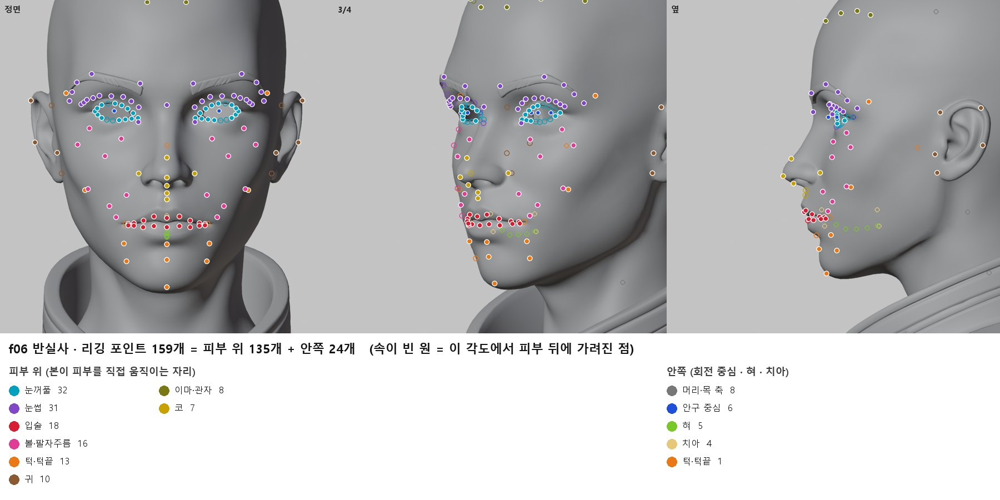
<figcaption><b>리깅 포인트 159개</b> (f06 반실사). 점 하나가 관절 하나이고, 색은 부위입니다. 속이 빈 원은 그 각도에서 피부 뒤에 가려진 점입니다. 피부 위 135개 중 눈꺼풀 32개, 눈썹 31개, 입술 18개, 볼·팔자주름 16개, 턱 13개가 표정을 대부분 만듭니다.</figcaption></figure>
<figure>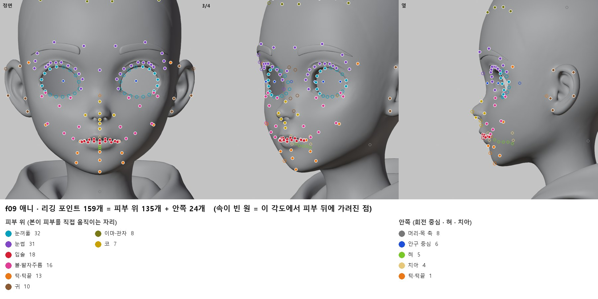
<figcaption>같은 159개가 애니 얼굴(f09)에서는 큰 눈과 작은 입에 맞춰 자리만 달라집니다.</figcaption></figure>
<figure>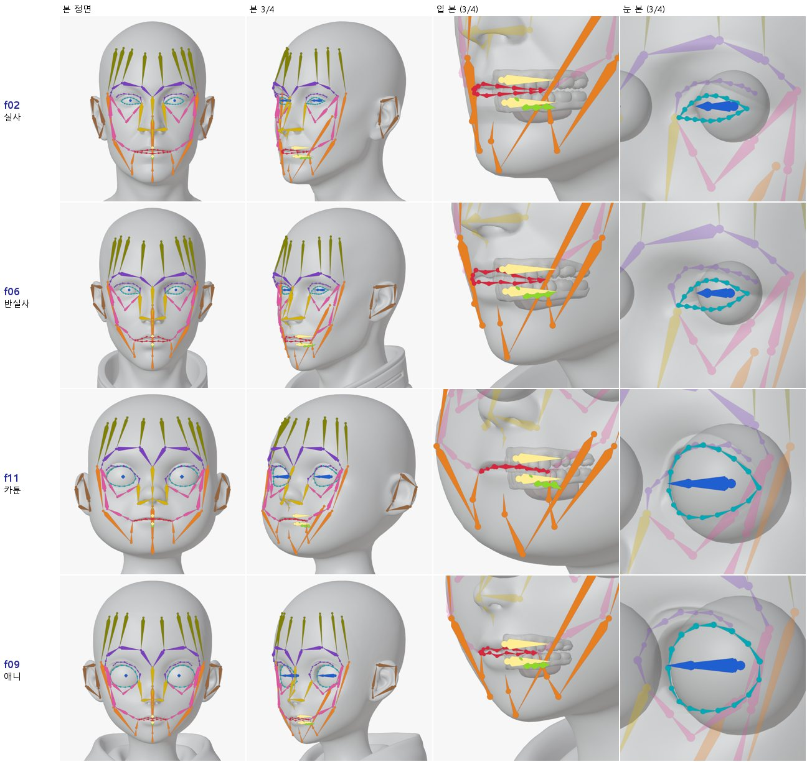
<figcaption><b>얼굴 본 (쉬는 자세)</b>. 색은 부위입니다. 빨강 = 입술, 노랑·연두 = 치아·혀, 하늘 = 눈꺼풀, 파랑 = 안구, 분홍 = 볼·팔자주름, 주황 = 턱, 보라 = 눈썹, 올리브 = 이마.
입 확대(3열)에서 입술 사슬이 입꼬리 쪽으로 촘촘해진 것, 눈 확대(4열)에서 눈꺼풀 사슬이 두 구석에서 끝나는 것을 볼 수 있습니다.</figcaption></figure>
<figure>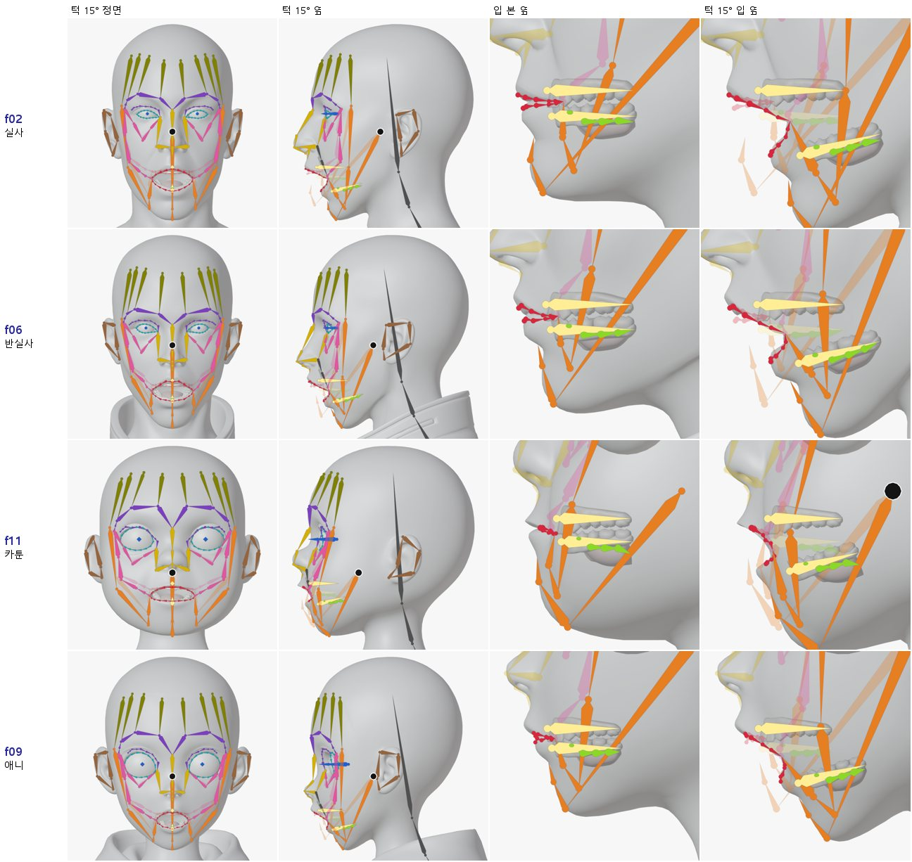
<figcaption><b>턱 15° 벌림</b>. 검은 공이 턱 경첩입니다. 아래 치아와 혀(4본 사슬)가 턱과 함께 돌아갑니다.</figcaption></figure>
<figure>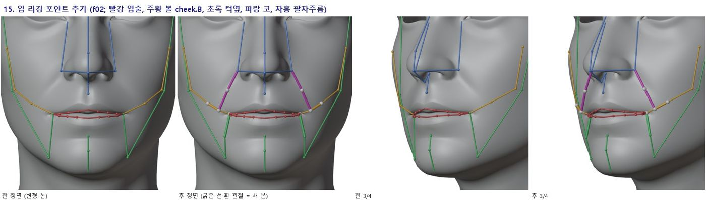
<figcaption><b>입 리깅 포인트 추가</b> (f02, 전/후). ① 입꼬리에서 4 mm에 새 입술 관절 ② 입꼬리 9 mm 바깥에 근육점 ③ 콧방울에서 근육점까지 팔자주름 사슬 ④ 입꼬리 아래 18 mm에 턱 옆 관절.</figcaption></figure>
<figure>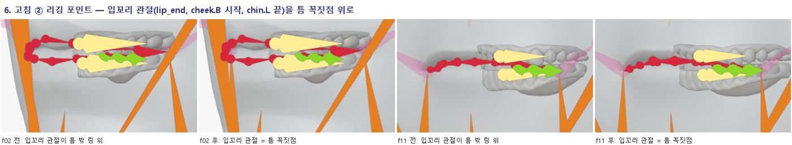
<figcaption><b>입꼬리 공용 관절</b>. 입 틈 바깥 고리 위에서 입 틈 꼭짓점 위로 옮겼습니다(0.9~2.8 mm 이동). 입꼬리 조절점을 반만 따라가던 문제가 없어졌습니다.</figcaption></figure>
<figure>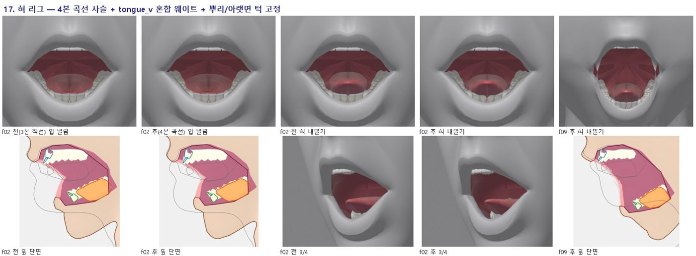
<figcaption><b>혀 리그</b>. 혀 가운데 선을 따라 휘는 4본 사슬입니다. 이웃 본 사이 웨이트를 부드럽게 섞고, 뿌리와 혀끝 아랫면은 턱에 일부 묶습니다. 입 벌림에서 혀가 아래 치아와 같이 약 22 mm 내려갑니다.</figcaption></figure>

<h2>3. 웨이트</h2>
<figure>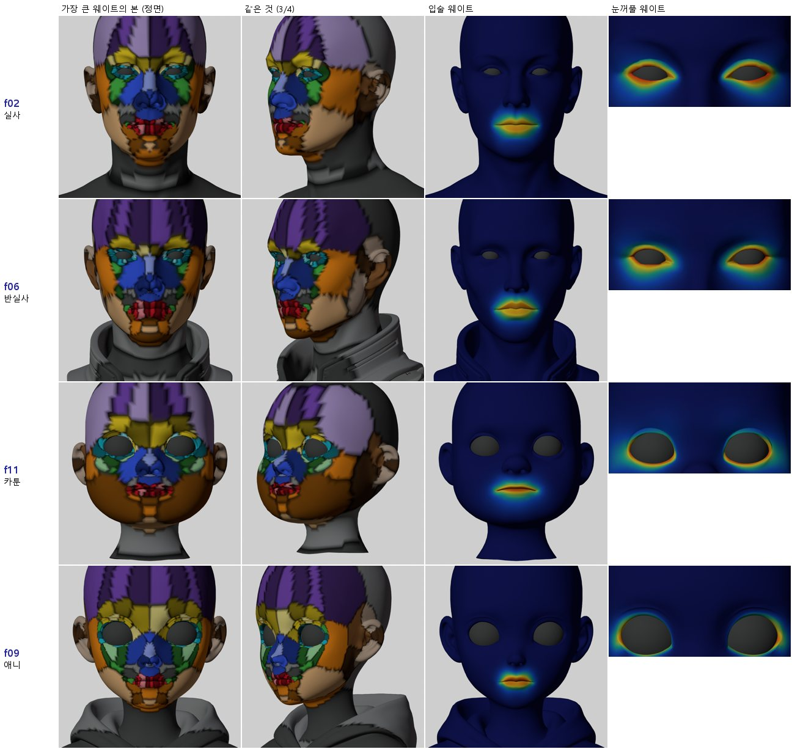
<figcaption><b>웨이트</b>. 1·2열은 정점마다 가장 큰 웨이트를 가진 본의 색이고, 3·4열은 입술과 눈꺼풀 본 웨이트입니다(노랑일수록 큼).
입술은 위/아래를 입꼬리까지 나눕니다. 입꼬리 5% 지점 분리도가 0.20~0.37에서 0.83~0.94로 올라갔습니다. 웨이트를 다듬을 때 입 틈을 건너지 않게 했습니다.</figcaption></figure>
<figure>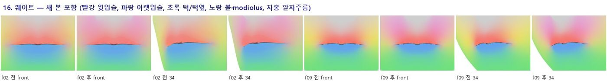
<figcaption>새 본까지 포함한 입 웨이트 (f02, f09; 빨강 윗입술 · 파랑 아랫입술 · 초록 턱 · 노랑 근육점 · 자홍 팔자주름).</figcaption></figure>

<h2>4. 눈</h2>
<h3>4.1 눈 모양을 참조 그림에 맞춤</h3>
<p>P2는 눈을 새로 해석해서 원본과 눈매가 달랐습니다. 그래서 눈 가장자리 루프를 참조 그림의 눈 윤곽으로 옮겼습니다.</p>
<ul>
<li>정면 방향으로만 옮기고 깊이는 유지했습니다.</li>
<li>안구는 우리 구로 바꾸고, 홍채가 참조 위치에 오게 했습니다.</li>
<li>쉬는 시선은 정면에서 1.0~4.4°입니다(이전 6~11°).</li>
<li>피부 최대 이동은 1.8~5.0 mm, 뒤집힌 면은 0입니다.</li>
</ul>
<figure>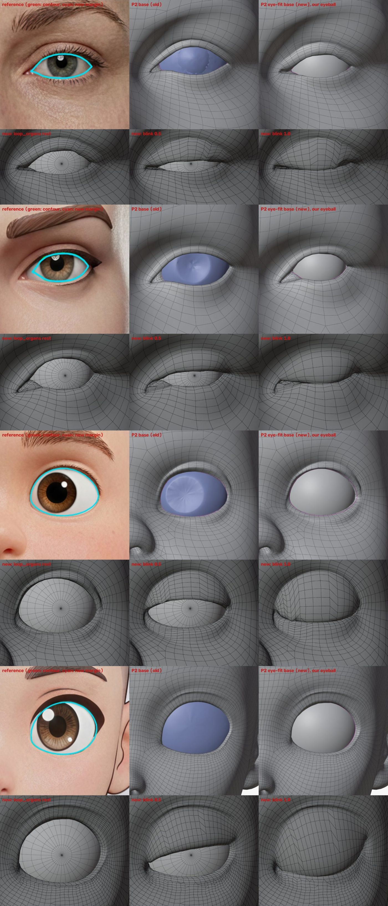<figcaption>머리마다 2줄: 참조 눈(청록 = 새 가장자리) | 이전 P2 | 새 베이스 + 우리 안구 / 쉬는 눈 · 반쯤 감기 · 감기.</figcaption></figure>
<h3>4.2 두 눈 구석을 기준으로 감기</h3>
<p>눈 테두리를 코 쪽 구석(눈물언덕 끝)과 귀 쪽 끝에서 윗선과 아랫선으로 나눕니다. 감으면 윗선이 아랫선 위에 처음부터 끝까지 포개집니다. 두 구석은 감기와 시선 키에서 모두 0 mm로 움직이지 않습니다.</p>
<p>f02와 f06은 눈 가장자리를 눈물언덕 끝까지 4.3 / 7.1 mm 늘렸습니다. 그 안쪽 각에는 구석 살에 붙은 납작한 분홍 눈물언덕을 넣었습니다.</p>
<div class="tbl"><table>
<tr><th>머리</th><th>감은 틈 (이전 → 지금)</th><th>접촉</th><th>감은 상태 꺾인 면</th><th>눈물언덕 보임 (0 / 0.5 / 1.0)</th></tr>
<tr><td>f02</td><td class="num">0.20 → 0.03 mm</td><td class="good">100%</td><td class="num">5 → 0</td><td class="num">4.0 / 1.6 / 0 mm²</td></tr>
<tr><td>f06</td><td class="num">0.17 → 0.03 mm</td><td class="good">100%</td><td class="num">14 → 0</td><td class="num">3.9 / 1.3 / 0 mm²</td></tr>
<tr><td>f11</td><td class="num">0.09 → 0.05 mm</td><td class="good">100%</td><td class="num">23 → 0</td><td>없음 (구석이 원래 가장자리)</td></tr>
<tr><td>f09</td><td class="num">0.06 → 0.02 mm</td><td class="good">100%</td><td class="num warn">41 → 5</td><td>없음</td></tr>
</table></div>
<figure>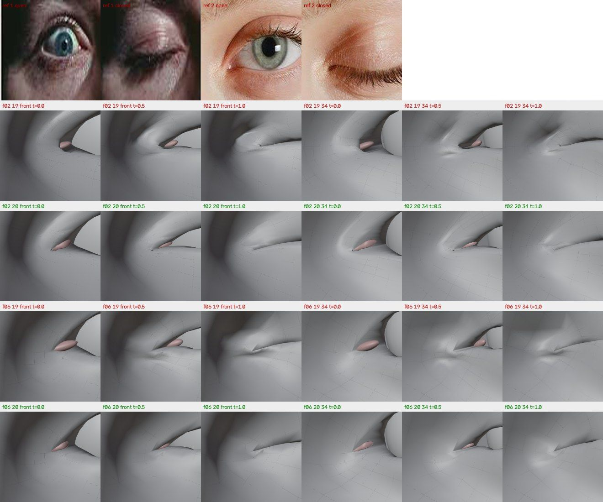<figcaption><b>코 쪽 눈 구석</b> (맨 위 = 보내 주신 참고 사진). f02·f06 각각 이전(빨강)/지금(초록), 정면·3/4, 0·0.5·1.0.</figcaption></figure>
<figure>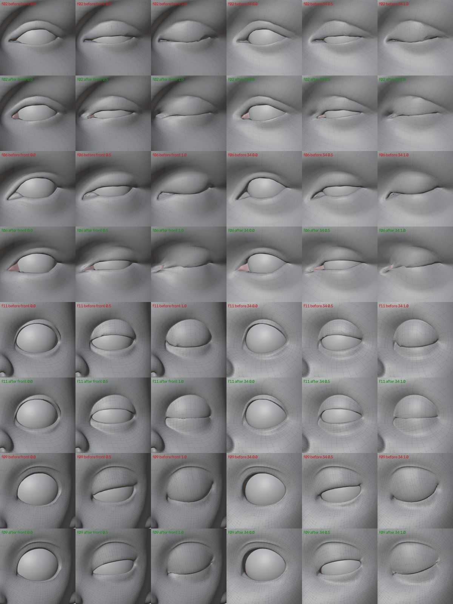<figcaption>4명 감기 전후. 이전 방식은 고리 번호로 움직임을 줄여 f02 바깥 1/3이 움푹하고 f06에 계단이 생겼습니다. 이제는 눈꺼풀 위의 실제 위치로 줄여 나갑니다.</figcaption></figure>
<h3>4.3 시선을 따라오는 눈꺼풀</h3>
<p>위아래를 볼 때 눈꺼풀이 안구 중심을 축으로 함께 돌아갑니다.</p>
<ul>
<li>윗꺼풀: 안구 각도의 0.58~0.60배</li>
<li>아랫꺼풀: 0.23~0.25배</li>
<li>좌우 시선: 눈꺼풀 꼭짓점이 0.10~0.15배 옆으로 밀림</li>
<li>뒤집힌 면 0, 안구와의 간격 유지</li>
</ul>
<p>반쯤 볼 때와 감으면서 볼 때를 위한 보정 키가 있습니다(<code>eyeLook…Mid…</code>, <code>eyeBlinkLook…Mid…</code>). 이 키들은 게임에서 기본 키 값에 맞춰 자동으로 구동해야 합니다.</p>
<figure>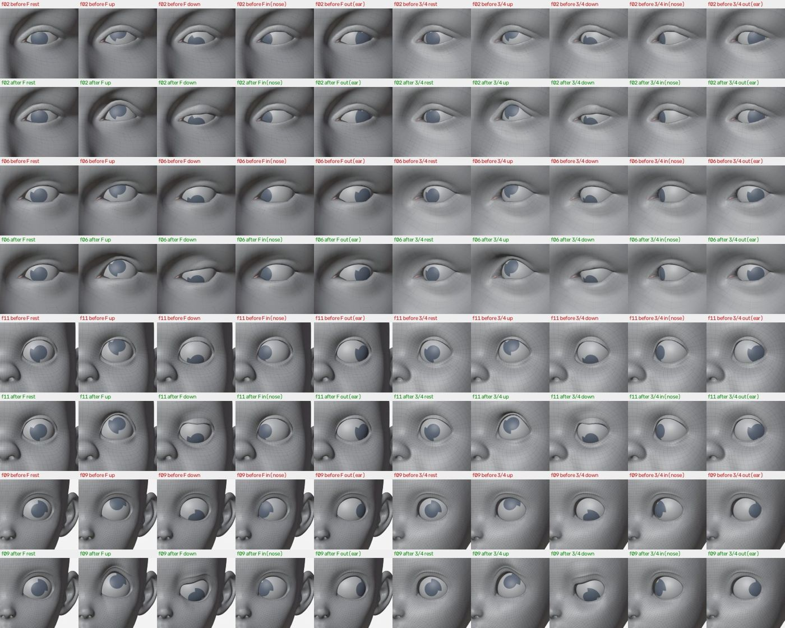<figcaption>머리마다 이전(빨강)/지금(초록). 정면·3/4, 정면 보기·위·아래·코 쪽·귀 쪽.</figcaption></figure>

<h2>5. 입</h2>
<p>입꼬리가 덜 벌어지던 원인은 네 가지였습니다.</p>
<ol>
<li>웨이트가 입꼬리에서 틈을 건너 번졌습니다.</li>
<li>표정 굽기의 템플릿 대응이 머리 전체 상자를 기준으로 해서 입이 어긋났습니다(f06 옆으로 9.3 mm, f11 14.8 mm 안쪽).</li>
<li>입꼬리 관절이 틈 밖에 있었습니다.</li>
<li>f11은 입 틈이 입꼬리 2.8 mm 앞에서 끝났습니다.</li>
</ol>
<p>넷 다 고쳤고, 그다음 리깅 포인트를 더해 보강했습니다.</p>
<div class="tbl"><table>
<tr><th>머리</th><th>입꼬리 10% 벌어짐 ÷ 가운데 (템플릿)</th><th>뒤집힌 면 (7개 입 표정 합)</th><th>입술선 울퉁불퉁</th><th>미소 입꼬리 올라감 (템플릿)</th></tr>
<tr><td>f02</td><td class="num">0.20 → 0.25 (0.27)</td><td class="num good">26 → 2 (16.4 → 4.3 mm²)</td><td class="num">0.76 → 0.54 mm</td><td class="num">11.6 → 13.9 (14.5) mm</td></tr>
<tr><td>f06</td><td class="num">0.18 → 0.21 (0.25)</td><td class="num good">4 → 0</td><td class="num">0.83 → 0.41 mm</td><td class="num">7.8 → 13.4 (13.8) mm</td></tr>
<tr><td>f11</td><td class="num">0.23 → 0.26 (0.25)</td><td class="num good">62 → 28 (22.6 → 2.6 mm²)</td><td class="num">0.54 → 0.25 mm</td><td class="num">7.2 → 14.8 (15.2) mm</td></tr>
<tr><td>f09</td><td class="num">0.18 → 0.26 (0.40)</td><td class="num bad">112 → 126 (32.9 → 34.4 mm²)</td><td class="num">1.05 → 0.58 mm</td><td class="num">11.9 → 14.3 (14.6) mm</td></tr>
</table></div>
<ul>
<li><b>턱 벌리고 입 닫기</b>: 틈이 2.1~4.8 mm에서 0.15 mm 이하가 됐습니다.</li>
<li><b>다문 미소의 입꼬리 틈</b>: 최대 0.05~1.1 mm입니다.</li>
<li><b>혀 내밀기</b>: 키 하나로 턱이 9° 벌어지며 혀끝이 아랫입술 밖으로 14.6~17.8 mm 나옵니다.</li>
<li><b>f09 입술 늘어남</b>: 작은 입에 템플릿 동작이 과해서 입술이 늘어나는 양에 상한(1.35배)을 두었습니다. 입 벌림 입술 면적 변화가 51%에서 35%로 줄었습니다.</li>
</ul>
<figure>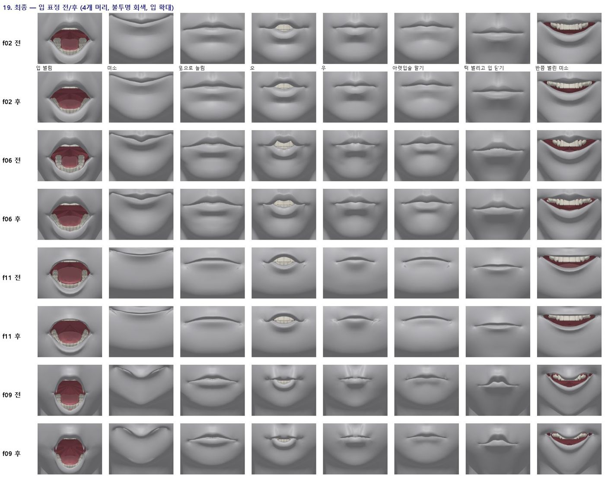<figcaption><b>입 표정 전/후</b> (보강 전 → 보강 후, 불투명 회색).</figcaption></figure>
<figure>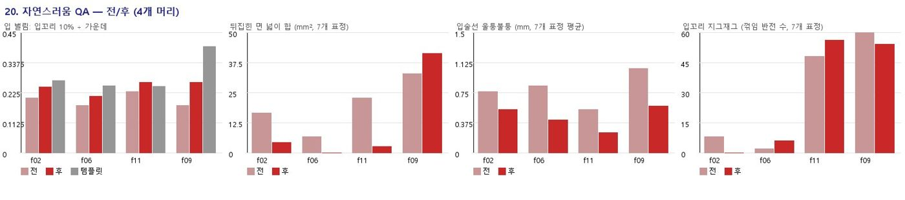<figcaption>자연스러움 수치 (연한 = 전, 진한 = 후).</figcaption></figure>
<figure>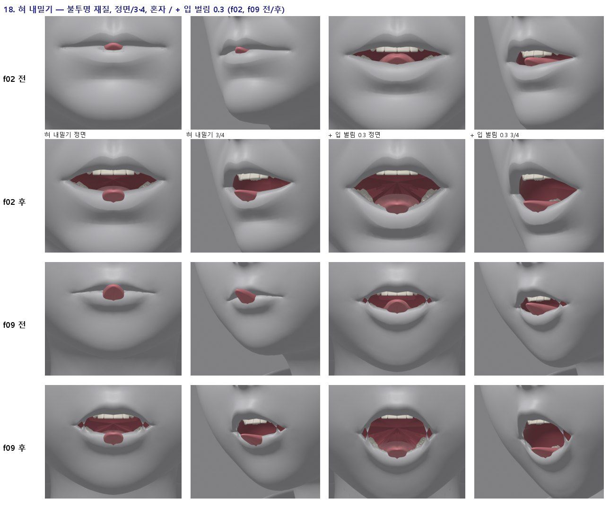<figcaption>혀 내밀기 (f02, f09, 전/후, 혼자 / + 입 벌림 0.3).</figcaption></figure>

<h2>6. 치아 · 잇몸 · 혀 (organ_teeth_v3)</h2>
<p>치아 한 개씩의 모양(교과서 Wheeler 크기)은 유지하고, 배열을 포물선 y = D(0.3u² + 0.7u⁴)으로 바꿨습니다. 앞은 넓고 완만하게 휘고, 송곳니에서 꺾여 뒤로 갈수록 벌어집니다. MakeHuman CC0 치아·혀는 저해상도이고 위아래 잇몸이 붙어 있어서 쓰지 않았습니다.</p>
<div class="tbl"><table>
<tr><th>머리</th><th>송곳니 ÷ 첫 어금니 (위 / 아래)</th><th>뒷줄 벌어짐</th><th>치아 크기 (v2)</th><th>혀 길이 / 폭 / 두께 mm</th><th>피부 관통 (8개 표정)</th></tr>
<tr><td>f02</td><td class="num">0.78 → 0.68 / 0.60</td><td class="num">14°</td><td class="num">0.95 (1.00)</td><td class="num">33.5 / 31.9 / 13.3</td><td class="num good">0</td></tr>
<tr><td>f06</td><td class="num">0.83 → 0.68 / 0.60</td><td class="num">14°</td><td class="num">0.91 (0.97)</td><td class="num">29.5 / 29.9 / 12.1</td><td class="num good">0</td></tr>
<tr><td>f11</td><td class="num">0.79 → 0.69 / 0.61</td><td class="num">16°</td><td class="num">0.95 (1.05)</td><td class="num">27.3 / 33.0 / 14.3</td><td class="num good">0</td></tr>
<tr><td>f09</td><td class="num">0.76 → 0.67 / 0.59</td><td class="num">16°</td><td class="num warn">0.63 (0.74)</td><td class="num">21.9 / 22.3 / 10.0</td><td class="num good">0</td></tr>
</table></div>
<p class="sub">사람 평균: 위 0.70, 아래 0.60. 바깥 치열 폭은 입 너비의 0.97~1.04배입니다.</p>
<figure>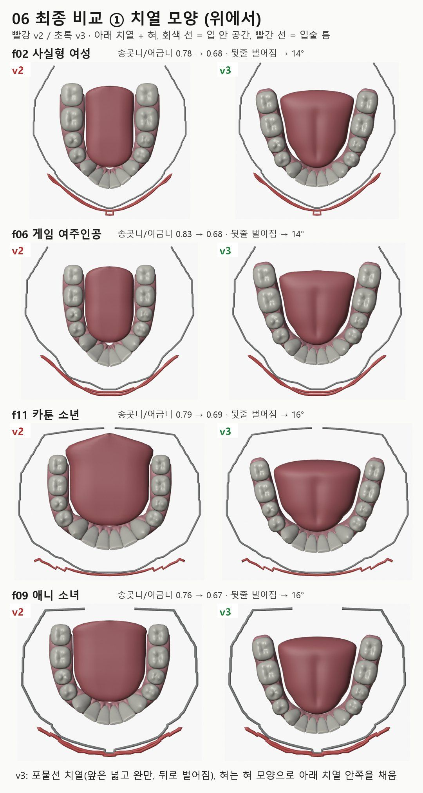<figcaption>위에서 본 아래 치열과 혀. 왼쪽 v2(U자), 오른쪽 v3(포물선).</figcaption></figure>
<figure>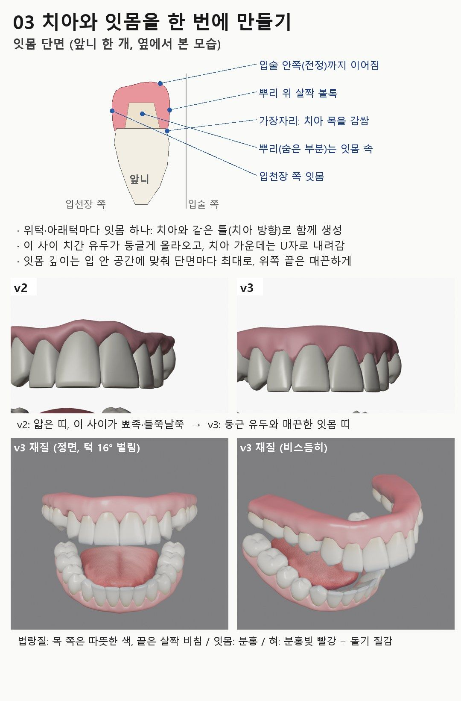<figcaption>잇몸을 치아와 같은 틀로 함께 만듭니다. 치아 목을 감싸고, 이 사이로 둥근 유두가 올라오며, 뿌리는 잇몸 속에 묻힙니다.</figcaption></figure>
<figure>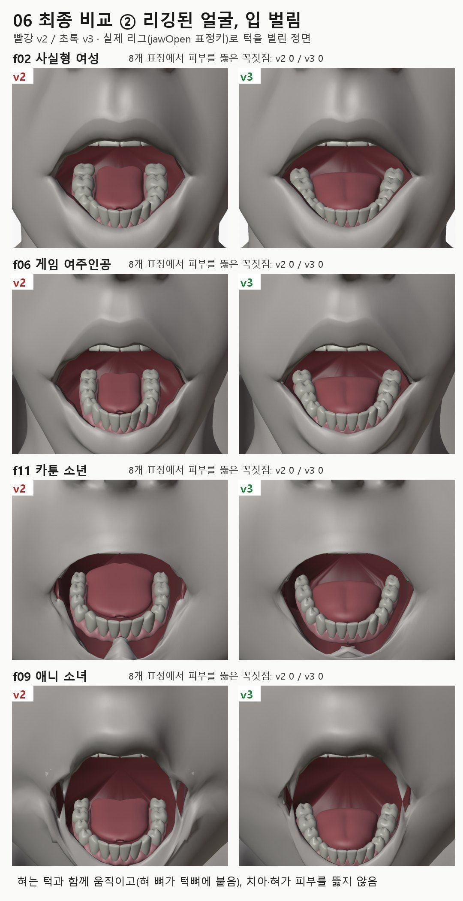<figcaption>리깅된 얼굴에서 입 벌림 (v2 / v3).</figcaption></figure>

<h2>7. 표정 키 (ARKit 52 + 보정 34)</h2>
<p>얼굴 키는 86개로, ARKit 52개가 모두 있고 보정 키 34개가 더 있습니다(감기·시선 중간 보정). 안구는 키 40개(시선 8 + 조합·중간 보정 32)입니다. 치아·혀·눈물언덕·눈썹 조각도 같은 이름의 키로 함께 움직입니다. 아래는 4명의 30가지 표정입니다(회색, 홍채만 칠함).</p>
<figure>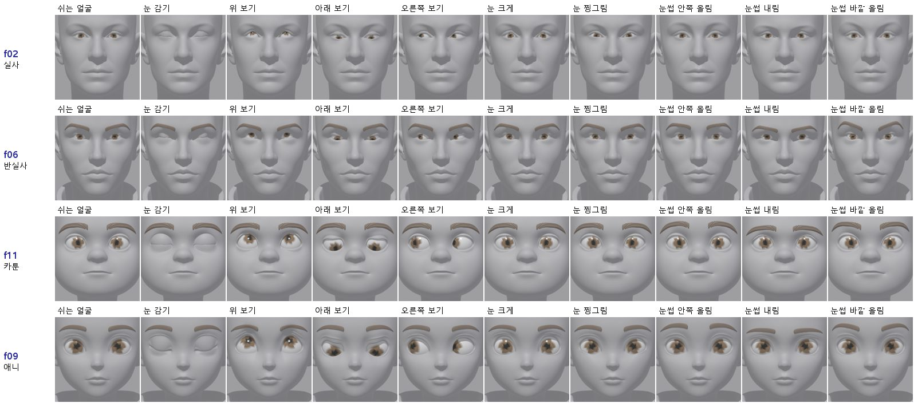<figcaption>눈·눈썹 표정.</figcaption></figure>
<figure>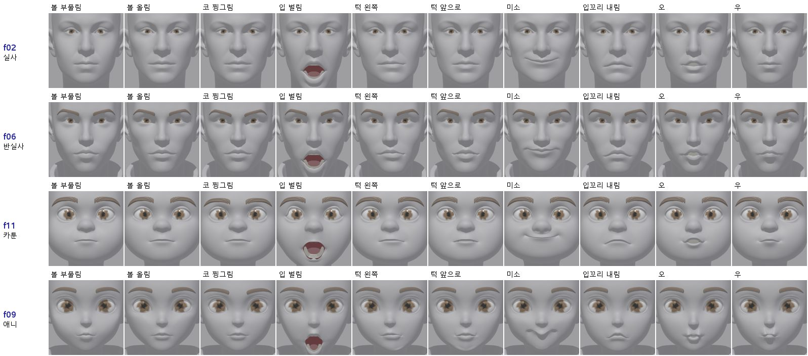<figcaption>볼·코·턱·입 표정 1.</figcaption></figure>
<figure>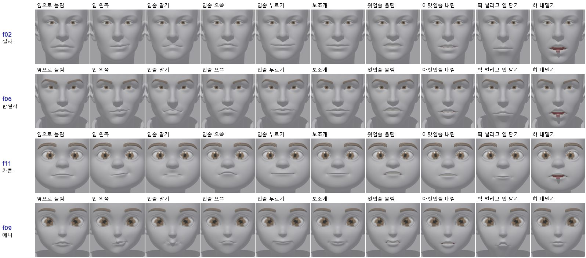<figcaption>입 표정 2, 턱 벌리고 입 닫기, 혀 내밀기.</figcaption></figure>
<figure>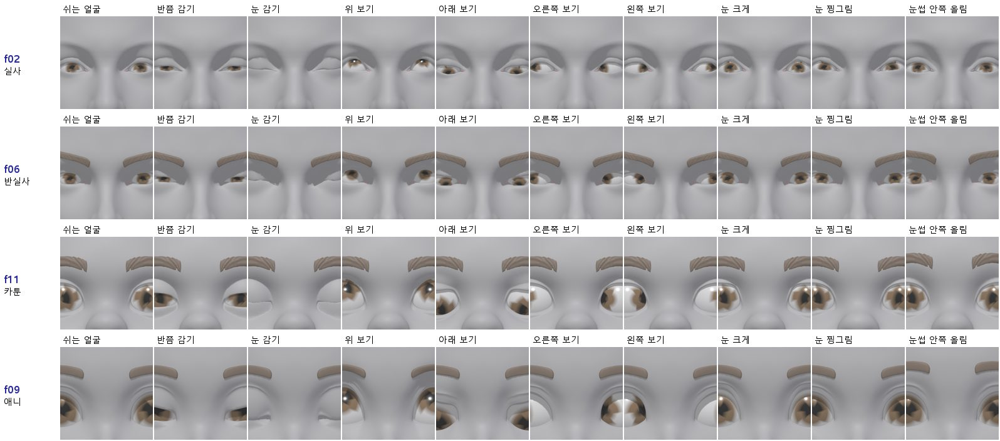<figcaption>눈 확대: 반쯤 감기 · 감기 · 위·아래·좌우 보기 · 크게 뜨기 · 찡그림 · 눈썹 올림.</figcaption></figure>
<figure>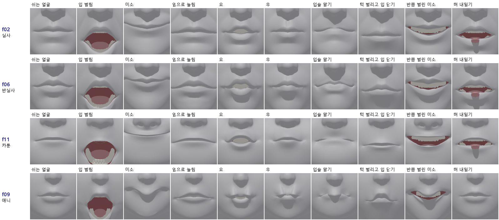<figcaption>입 확대: 입 벌림 · 미소 · 늘림 · 오 · 우 · 입술 말기 · 턱 벌리고 입 닫기 · 반쯤 벌린 미소 · 혀 내밀기.</figcaption></figure>

<h2>8. 상태 요약</h2>
<div class="tbl"><table>
<tr><th>항목</th><th>상태</th><th>메모</th></tr>
<tr><td>메시: 눈 모양, 눈꺼풀 루프, 코 쪽 구석</td><td><span class="chip ok">완료</span></td><td>원본 변형은 눈 주변 최대 5 mm, 뒤집힌 면 0</td></tr>
<tr><td>리깅 포인트·본</td><td><span class="chip ok">완료</span></td><td>얼굴 본 162, 4명 같은 구조, 웨이트 빠짐 0</td></tr>
<tr><td>눈 감기·시선</td><td><span class="chip ok">완료</span></td><td>두 구석 고정, 접촉 100%, 눈꺼풀 따라옴</td></tr>
<tr><td>입 표정</td><td><span class="chip part">대부분</span></td><td>f02·f06·f11 좋음, f09 뒤집힌 면 남음</td></tr>
<tr><td>치아·잇몸·혀</td><td><span class="chip ok">완료</span></td><td>포물선 치열, 혀 4본 리그</td></tr>
<tr><td>UV·텍스처</td><td><span class="chip no">보류</span></td><td>나중에 Tripo 자동 텍스처로 실험 (tex2 도구는 남겨 둠)</td></tr>
</table></div>

<h2>9. 남은 문제</h2>
<ol>
<li><b>f09(작은 애니 입)의 뒤집힌 면 126개</b>(보강 전 112개). 원인을 끄기 실험으로 찾았습니다.
  <ul>
  <li>입꼬리 옆 근육점이 미소에서 52개를 더합니다.</li>
  <li>턱 옆 관절이 입 벌림에서 28개를 더합니다.</li>
  <li>입꼬리 쪽 새 입술 본이 입 벌림에서 28개, '오'에서 22개를 더합니다.</li>
  </ul>
  다음 시험은 작은 입에서 근육점·팔자주름을 끄는 것입니다(<code>RIG_MP_MODIOLUS=0</code>).</li>
<li><b>f11·f09 입꼬리 계단 주름</b>. 쉬는 얼굴에서부터 입 틈이 메시 모서리를 계단처럼 따라갑니다(8 / 12곳). 리그가 아니라 <code>loop_organs</code>가 자르는 경로의 문제입니다.</li>
<li><b>템플릿에서 온 모양</b>. f09의 '턱 벌리고 입 닫기' 윗입술 M자와 f06·f09 미소의 작은 V자는 완화만 했습니다.</li>
<li><b>f09 양쪽 미소를 함께 켤 때</b> 입술이 42% 늘어납니다. 상한이 키 하나씩만 보기 때문입니다.</li>
<li><b>눈물언덕 뒤 작은 틈</b>. f02·f06을 3/4에서 볼 때 0.7 / 2.2 mm² 정도 보입니다.</li>
<li><b>f09 치아가 작아짐</b>(0.74 → 0.63배). 자연형 치열을 작은 입안에 넣기 위해서입니다.</li>
<li><b>보정 키 구동</b>. 게임에서 시선·감기 보정 키(<code>…Mid…</code>)를 기본 키 값에 맞춰 구동하는 연결이 필요합니다.</li>
</ol>

<h2>10. 도구와 명령</h2>
<div class="tbl"><table>
<tr><th>도구 (tools/face_auto)</th><th>역할</th></tr>
<tr><td><code>eye_fit_ref.py</code> · <code>canthus_wedge.py</code> · <code>lid_fair.py</code></td><td>눈 가장자리를 참조 윤곽에, 코 쪽 구석을 눈물언덕 끝까지, 눈꺼풀 고리 다듬기</td></tr>
<tr><td><code>caruncle.py</code> · <code>caruncle_qa.py</code> · <code>lid_qa.py</code></td><td>눈물언덕 만들기, 보임 · 눈꺼풀 QA</td></tr>
<tr><td><code>organ_blink_keys.py</code> · <code>organ_eye_look_keys.py</code> · <code>organ_lib.py</code></td><td>두 구석 고정 감기, 시선 따라오는 눈꺼풀</td></tr>
<tr><td><code>organ_teeth_v3.py</code></td><td>포물선 치열 + 잇몸 + 혀 모양 혀</td></tr>
<tr><td><code>rigify_fit.py</code> · <code>organ_mouth_weights.py</code> · <code>rigify_bake.py</code></td><td>입 리깅 포인트 +12, 혀 4본, 입술 웨이트, 템플릿 대응·봉합·상한</td></tr>
<tr><td><code>bind_pieces.py</code></td><td>P2 눈썹 조각을 얼굴 표정 키에 묶음</td></tr>
<tr><td><code>expr_stills.py</code> · <code>anim_test.py</code></td><td>표정 정지 그림, 점검용 짧은 영상 (요청 때만)</td></tr>
</table></div>
<p>실행: 바탕은 <code>bash m1/clean/P2/run_p2.sh</code>, 리그 전체는 <code>bash m1/run_v4_all.sh</code>, 보고서 그림은 <code>bash m1/report_v4.sh &lt;머리&gt;</code>와 <code>python m1/rep_sheets.py</code>입니다. 결과 파일은 <code>m1/v4/P2/&lt;머리&gt;/bake/arkit_bp.blend</code>입니다.</p>
</main>
